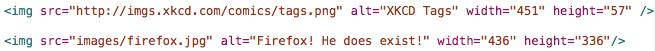

Web Site Design & Construction
So far all of the tags we've looked are considered to be block level elements. These are defined as tags which are used to structure the basic content of the site. This next lot of tags we will look at (and hopefully cover in slightly less detail, I miss my sleep) are called inline elements. These are used for enhancing your content, or at least rendering them in a specific manner.
Common inline tags include the emphasis (read: italics) and strong (read: bold) tags, used for emphasis of words, or just stylistic effects. Once upon a time in the far distant past of the mid-90's there were specific tags used inline to produce many effects, though these have become deprecated and have been replaced with the much nicer, but arguably less efficient, CSS (yes, that beast again. If you're anxious to see what it is, just click the tab above for crying out loud!). I'm not overly keen on using the emphasis and strong tags, preferring to produce the same effects using CSS (though on this web site I have utilised them, and might be coming around to how efficient they can be ... don't tell them that though!), but for the purposes of this tutorial we will use them, as the effects are instant in plain HTML. Other inline tags which can be used are the code and span tags.
There are two types of emphasis that you can put on text within HTML - strong makes the text bold; em makes the code italic. These can be used as and how you feel like. I tend to select whatever feels natural and go with the opposite. I like to push boundaries, you see. Feel free to add some emphasis to your text, don't forget to close your tags (I'm assuming you know how to so that now). I'll show you how I did it in mine. Check out the results in your browser. Even without CSS you should see a difference.
Emphasis has been added to some words. Though it's ultimately pointless in my document, as none of the words mean anything.
I'm not sure how applicable this is going to be in the context of your own site, but this is a tag which I have found extremely useful in the development of this site. The code tag changes the font of the enclosed text to a monospace typeface (meaning that each character takes up the same number of pixels as all the others). This is very useful when displaying code snippets and wanting to avoid that awkward is it burn or is it bum moment, though why you'd be typing bum in code I have no idea. Or burn for that matter. Regardless, the code tags do a great job of changing that. Also it can be manipulated, like everything else, in CSS.
Look! Monotype font face!
Go ahead an put some code tags in if you have any pieces of code you want to show in your web site, though at this point in time I imagine that is unlikely.
Span tags give the developer the ability to change the look and feel of certain blocks of text within block elements, this means that they can change the colour of a particular line of text without having to give the whole paragraph a tag, or resorting to the deprecated font tags. Within the context of what we're learning right now, span tags are pretty useless. They just give us another wrapper around our text which does nothing. However I'm going to ask that you persevere and put some tags in your document and give them the class name "blue". The reasons for this will become apparent when we move onto that now mythical beast, CSS.
Two sets of span tags, both with the same class. I wonder what they will do!
That's it for inline tags I'm afraid. There are a few other tags which can be used, but they're not really that widely used, so I don't think there's any real need to cover them. If I'm honest with you, I was stretching to justify the inclusion of the code tags, but ho-hum. Onwards to mail! I mean media. Yes. Media ... well, just images actually. But, YAY! IMAGES!
Finally, we're getting somewhere interesting. Or at least, something a little more colourful than the black and white (and blue, can't forget those links) text in our website. The images. Putting images into a web page is nice and simple, if you remember three key things. Number one: Use pngs - this isn't a requirement, any type of image (.gif or .jpg or even .bmp are all eligible) can be used on a website, but the PNG is the nicest of them all. It's my precious. Number two: Remember your alt attribute. The alt attribute is essentially the description of the image, and is placed in your site when the actual image cannot be located. It also replaces the image in text-only browsers and when the web site is being read by a screen-reader. Number three: src is the lord master of all images. The source attribute specifies where the image is located. It works pretty much identically to the href attribute in our anchor tags, but doesn't link people out to an external site when clicked.
So, remember those three things and you will be perfectly fine with images. Oh, one last thing, image tags can be self-closed in XHTML. This is incredibly useful as you don't want to be putting text within your image tags so having them look like this <img></img> is pointless. Instead, because we have chosen to use XHTML 1.0 Strict, we can create our images like this:
The top tag links to an external image, the bottom links to an internal image. 
The example above shows two types of sources, internal and external. Internal images should be placed in a local folder called "images", this is generally an approved of method of storing images. The external source is just the URL for the location of the image. This works in the same way as the anchor tag. It is generally good practice to include the height and width attributes of your image in the declaration as this means that if your image can't be found it doesn't mess up your style. Check your page in a browser and you should see your images there, nice and perty. Finally something interesting in our web site.
CSS »That's us done with the main HTML tags. Now we can move on to something remarkably more exciting. Cascading Style Sheets! Yes, finally we move on to CSS! This is going to be fun! Allegedly. Though, to be fair, HTML is easy compared to CSS. There are a lot of things to cover in CSS. So this is going to be interesting.